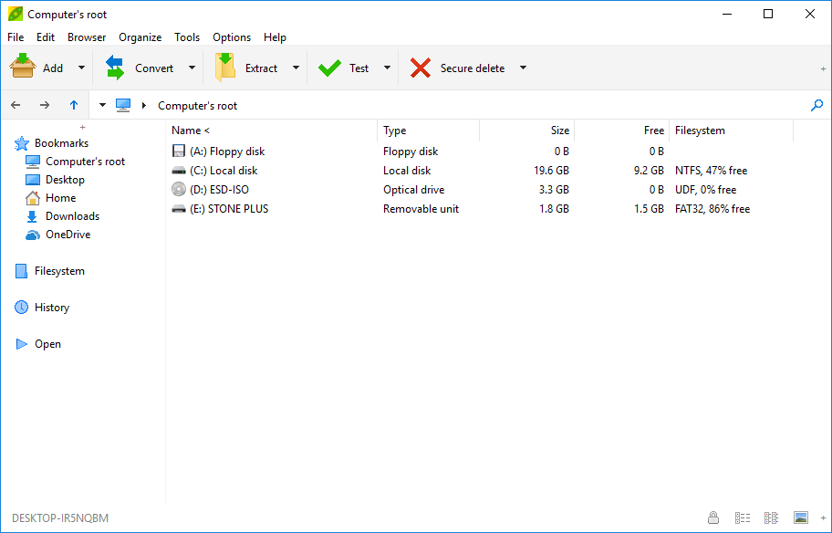

Double click files in
archive to open for editing
The simplest way to edit
existing files inside
archives, for archive types supported through 7z / p7zip
backend, is to open the archive and double click on desired file from
PeaZip archive manager to open it as
preview: file(s) will be extracted for viewing / editing to a temporary
work path.
If the file preview is modified and saved, PeaZip will automatically
ask to update
the file in
archive with the newer version.
From context menu > More it is possible to force update for
arbitrary archive types, providing PeaZip is able to write data into
the desired foramt, as explained below.

Right-click to
edit files with custom application
Rather than double clicking the archived file to open it with the
associated application, it is possible to right click the file and use
Context menu > Preview with
submenu to chose a custom application, or one of the user defined
applications, to edit the file.
Set custom apps to open
and edit files in archives with
From Options > Settings, Application tab it is possible to define
apps and scripts to open files with.
Most common applications and anti-virus
programs are automatically detected and configured by PeaZip, but
every application and script can be easily customized by the user, or
replaced with preferred alternatives.
Drag / Add edited files
into
the archive
Alternatives are dragging
files into the archive in order to overwrite existing version of
the file, or use Add button and selecting an existing archive as output
destination for more options (Add, Update, Freshen updating only files
already existing in archive,
Synchronize) available from archive creation
interface.
It is posible to edit existing RAR archives with PeaZip if WinRar is
installed in the system (autonomous support for rar editing rar file
format is not possible due to rar licensing limitations).

What archive types can
be edited
Please
note that is (quite obviously) necessary to write data to the archive
in order to modify its content, so the correct password must be
provided if applicable, and only file in write-supported formats can be
edited - in example 7Z, TAR, WIM, and ZIP formats supported through
7z/p7zip binary.
Edit vcontent of arbitrary
file types as archives
From Options
> Settings > Archive manager tab it is possible to set "Edit
non canonical archive
types"
option in order to try to modify data inside container files with
extensions non commonly used for file archiving, but this option is off
by default and not recommended for general usage because those formats
may require editing / saving metadata fields which are unsupported and
out of
the scope of general-purpose archiving applications.
Note about editing Windows
EXE files
PeaZip can create EXE files as SFX (self-extracting archives) both
employing 7Z and ARC compression.
It is possible to open / browse and to edit EXE files as archives, but
– due to the multiple standards available for the format - not all
types of EXE files can be read (for browsing) or written (for editing).
- Whenever the user
attempts to edit the content of an EXE file PeaZip assumes the file is
a 7Z SFX archives, because this structure can be bot read and written
by the application.
- As a role of thumb,
to edit the content of an EXE file - which is not an SFX archive - it
is possible to rename the file form .exe to .zip extension and to
revert the extension back to .exe once done editing. However
please note that acting as a resource editor for EXE files is beyond
the scope of the application, so edited EXE files are not guaranteed to
work correctly – conversely, editing 7Z SFX EXE file is fully supported.
Read more about how to edit files
inside 7Z archives, edit content of
RAR files from PeaZip if WinRar is available on the same machine, edit files in ZIP archives, and how
to edit ZIPX files (non-Deflate
compressed ZIP containers).
Synopsis: How to edit
files inside 7Z TAR WIM ZIP archives with PeaZip. Edit and save changes
to compressed files. Modify file content in existing archives.
Topics: edit files in
archives, edit compressed files
PeaZip > FAQ
> How to edit files inside existing archives
|